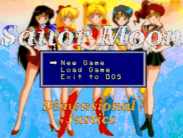
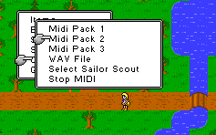

Sailor Moon - PC Games
Sailor Moon Solitaire puts the Sailor Senshi on the deck of cards
you are using.
![[Sailor Moon World]](images/sm_world.jpg) Sailor Moon World is
a freeware game designed by Tim Yep. The code is currently undergoing a massive
re-write. While the demo is only 35% complete, it shows promise especially since it boasts handling four simultaneous
players.
Sailor Moon World is
a freeware game designed by Tim Yep. The code is currently undergoing a massive
re-write. While the demo is only 35% complete, it shows promise especially since it boasts handling four simultaneous
players.
Warriors of Love is a freeware project in its infancy. No playable
demo currently; just a plea for help.

Dimensional Justice is an ongoing freeware RPG project that
you can contribute help to complete it.

Sailor Moon RPG Project is in its infancy. Plenty of
opportunities available to help out with the project.
Anime Video Game Resource Center © 1998 by Luis A. Cruz